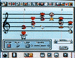

| −−スーパーファミコンでは音がかなり進化しましたよね。 |
| 近藤 スーパーファミコンでは８音を同時に鳴らせたんです。第一弾ソフトの『スーパーマリオワールド』では、いろいろな楽器の音を使ってみました。僕はディスクシステムも第一弾ソフトをやったし、スーパーファミコンも第一弾ソフトをやったんですけど、どちらもいままでのソフトとの違いをいかに出すかということを強く意識しました。ディスクシステムの『ゼルダの伝説』は、最初の音楽で「新音源だ」ということがわかるように作ったし、『スーパーマリオワールド』では、バラエティに富んだ音色をタイトル音楽に使ったんです。 |
| −−スーパーファミコンになったのは、音楽的にはすごい出来事だったんでしょうか。 |
| 近藤 音色はファミコンと全然違いますよね。ＰＣＭ音源といいまして、サンプリング、つまり自然界の音を録音してきて、それを音色として使えるようになったんです。だから、ギターとかピアノの音も使えるようになったんですよ。 |
| −−スーパーファミコンでステレオにもなりましたよね。 |
| 近藤 ええ。それを生かして音楽を作ったり、いろいろとステレオ感を出そうと思って、キャラクターの動きにあわせて効果音を出したりとかしました。 |
| 戸高 僕はスーパーファミコンでは１作だけなんですけど、『マリオペイント』の音楽を担当しました。 |
| −−ゲームボーイに比べると、劇的に変わった感じがしましたか。 |
| 戸高 そうですね。音色がたくさん作れるので、楽しかったです。 |
| −−『マリオペイント』は、音楽ゲームの走りのようなソフトでしたね。 |
| 戸高 ええ。ベタベタと絵を貼り付けるだけで音楽が作れるという漠然としたアイデアからつめていって、ああいう形にしたんです。 |
| −−スーパーファミコンになると車のエンジン音なども登場しました。特に画期的だった音はありますか。 |
| 近藤 声というか、言葉が出せるようになりましたね。『スターフォックス』にも、主人公の声が入っていました。 |
| −−そういった声はどこかから録音（サンプリング）してくるんですか。 |
| 近藤 はい、そうです。『スターフォックス』の声はＮ．Ｏ．Ａ．（ニンテンドウ・オブ・アメリカ）の人の声なんですよ。でも、声を使ったりするものは、スーパーファミコンのソフトにはあまりなかったですね。やっぱり容量を食うので、あまり使えないんです。 |
| −−この頃に音楽の作りかたは変わりましたか。 |
| 近藤 それまではそのままプログラミング用の言語を打って、プログラムをしていたんですけど、スーパーファミコンになってから、音符の高さと音符の長さをデータ入力すれば曲ができるっていうツールを作ったんです。ディスプレイを見ながらコンピュータで、音の高さや音の長さを打ち込んでいくんですね。表示されているのは、楽譜というか、表みたいな形なんですけど。 |
| −−スーパーファミコンになってからも、１人で効果音までを担当していたんですか。 |
| 近藤 はい。ＮＩＮＴＥＮＤＯ64になるまでは、全部１人で担当しました。 |
担当：近藤浩治（460KB） |